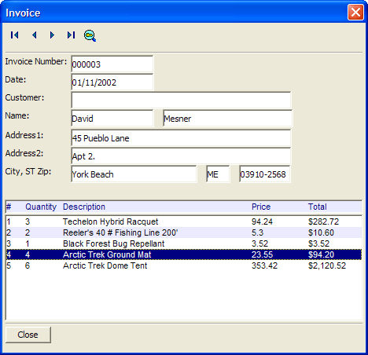

Displaying Data from a Set
This script demonstrates how you can use an Xdialog box to display data from a set. It shows data from the invoice.set in the AlphaSports sample application.
The Main Script
First, dimension variables and open the set. Exit if the set cannot be found.
dim setname as C dim vl as P dim s as P dim line_number as N dim invoice_number as C dim invoice_date as D dim customer as C dim lastname as C dim firstname as C dim address1 as C dim address2 as C dim city as C dim state as C dim zip as C dim items as C dim direction as C dim title_bar as C setname = a5.Get_Exe_Path()+ chr(92) + "samples\alphasports\invoice.set" if file.exists(setname) = .f. then ui_msg_box("Error","Cannot run this script because '"+setname+"' not found.") end end if vl = local_variables() on error goto set_did_not_open s = set.open_session(setname) |
Next, open the parent invoice_header table and the child invoice_items table. Initialize variables.
on error goto 0 'get pointer to invoice_header table tih = s.invoice_header tih.index_primary_put("") tih.fetch_first() 'get pointer to invoice_items table tii = s.invoice_items line_number = 1 items = "" direction = "" invoice_number = "" |
Start creating the Xdialog with the navigation buttons. Note that the {can_exit} command allows you to close the dialog by clicking the X button at the upper right corner of the dialog. The {startup} command fires the init event, which displays the first records from the parent and child tables.
title_bar = "{F=Arial,8}{C=Dark Blue,White,Dark Blue}{B=White,Dark Blue,Blue White}#{T=0.25}Quantity{T=0.75}Description{T=3.25}Price{T=4.00}Total" ui_modeless_dlg_box("Invoice",<;<;%dlg% {can_exit=close} {startup=init} {region0} <;%B=T;T=First;I=$a5_record_first;%!first> <;%B=T;T=Previous;I=$a5_record_previous;%!prev> <;%B=T;T=Next;I=$a5_record_next;%!next> <;%B=T;T=Last;I=$a5_record_last;%!last> <;%B=T;T=Find;I=$a5_find_by_key;%!find> ; |
Create the fields to display the records from the parent table and the list box to display the records from the child table.
{endregion0}; {line=1,0}; {region} Invoice Number: |[.20invoice_number]; Date: |[.20invoice_date]; Customer:|[.55customer]; Name:|[.20firstname] [.32lastname];; Address1:|[.55address1]; Address2:|[.55address2]; City, ST Zip: |[.31city] [.5state] [.12zip]; {endregion}; {lf}; [%O={@@};D%.90,1^#title_bar?.f.]; [%O={@@};D%.90,10line_number^#items]; {line=1,0}; {region} <10&Close!close> ; {endregion} |
This final block of the main script contains the event handling code, the error handler, and the end command.. Note how the INLIST()function is used to isolate the navigation events in a If ... END IF block.
%dlg%,<;<;%code% if a_dlg_button = "init" then get_header_variables(vl) line_number = 1 end if if a_dlg_button = "find" then find_invoice(vl) line_number = 1 end if if a_dlg_button = "close" then s.close() ui_modeless_dlg_close("invoice") end if if inlist(a_dlg_button,"first","next","prev","last") then if a_dlg_button = "first" then direction = "first" else if a_dlg_button = "prev" then direction = "prev" else if a_dlg_button = "next" then direction = "next" else if a_dlg_button = "last" then direction = "last" end if fetch_next(vl) line_number = 1 end if %code%) end set_did_not_open: ui_msg_box("Error",setname + " not found, or could not be opened.") |
Supporting Functions
The fetch_next function retrieves the appropriate invoice_header record, ignoring child records (because the fetch level is set to 1). It retrieves the record's field values with the get_header_variables function.
function fetch_next as C (vars as P) with vars if direction = "next" then tih.fetch_next(1) else if direction = "prev" then tih.fetch_prev(1) else if direction = "last" then tih.fetch_last(1) else if direction = "first" then tih.fetch_first(1) end if get_header_variables(vl) end with end function |
The get_header_variables function reads the current invoice_header record and assigns the values to the fields of the Xdialog with the get_items function.
function get_header_variables as v (vars as P) with vars invoice_number = tih.eval("invoice_number") invoice_date = tih.eval("Date") lastname = tih.eval("customer->lastname") firstname = tih.eval("customer->firstname") company = tih.eval("customer->company") address1 = tih.eval("customer->Bill_Address_1") address2 = tih.eval("customer->Bill_Address_2") city = tih.eval("customer->Bill_City") state = tih.eval("customer->Bill_State_Region") zip = tih.eval("customer->Bill_Postal_Code") get_items(vl) end with end function |
The get_items function builds a list of child records for the current invoice_header record. The function applies the formatting to the list that the Xdialog list box control requires with the A5_OWNER_DRAW_LIST_FMT()function.
function get_items as C (vars as P) Dim format as P with vars items = "" tii.fetch_first() while .not. tii.fetch_eof() items = items + tii.eval("quantity + '|'+product->description+'|'+ price + '|' + alltrim( str((quantity*price),12,2,'$') )")+ crlf() tii.fetch_next() end while Format.tab_stops=".5,3,3.75" Format.odd_row_color="White" Format.even_row_color="Blue White" Format.odd_selected_color="Dark Blue" Format.even_selected_color="Dark Blue" Format.font="Arial,8" Format.font_color_unselected="Black" Format.font_color_selected="White" Format.lastbutton="OK" Format.group_size=1 Format.number_rows=.t. Format.alternating_bands=.t. 'Apply 'owner draw' formatting information to the list items = a5_owner_draw_list_fmt(items,Format) end with end function |
The find_invoice displays a popup menu of search alternatives. It then displays an Xdialog that accepts the search parameter. Depending on the user's choice, it sets the order of records using either the <;TBL>.INDEX_PRIMARY_PUT()or <;TBL>.ORDER()methods. It then finds the next matching record using either the <;TBL>.FETCH_GOTO()or <;TBL>.FETCH_FIND()methods. It uses the get_header_variables function to display the results.
function find_invoice as C (vars as P) with vars menu_choices = <;<;%list% Record Number Invoice Number Lastname %list% result = ui_popup_menu(menu_choices) text_prompt = alltrim(result) + ":" find_what = "" if result = "" then exit function end if find_result = ui_dlg_box("Find Invoice by " + result,<;<;%dlg% {on_key=enter} {lf}; {text=25,1:text_prompt} [.20find_what] {sp};; {lf}; {line=1,0}; <10&Find!find?.not.(find_what="")> <10&Cancel!cancel>; %dlg%) if (find_result = "find") .or. (find_result = "enter") then if (find_what <> "") then if result = "record number" then tih.index_primary_put("") tih.fetch_goto( val(find_what) ) get_header_variables(vl) else if result = "invoice number" then tih.order("invoice_number") tih.fetch_find(find_what) get_header_variables(vl) else if result = "lastname" then tih.order("customer->lastname") tih.fetch_find(find_what) get_header_variables(vl) end if end if end if end with end function |

Next
Displaying Dynamic Help When Clicking on a Label
See Also
Limitations
Desktop applications only.